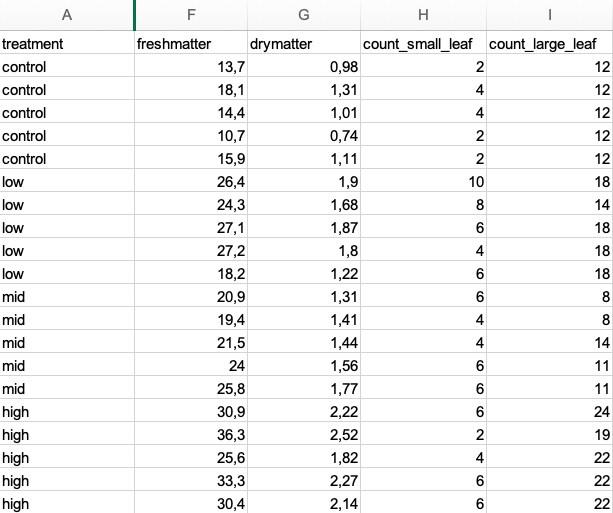

13 Daten einlesen
Version vom November 02, 2022 um 11:55:49
Im Anhang sec-beispiel-auswertung findest du Beispiele für die Auswertung von Daten. Du kannst dir dort das Format anschauen und dann entsprechend deine Daten formatieren. Du findest auch alle Dateien auf GitHub unter jkruppa.github.io/data/ als Excel oder auch als CSV. Schau dir die Beispiele einmal an.
Die Daten aus unserem Experiment müssen rein in R. Das heißt, wir haben meist unsere Daten in einer Exceldatei vorliegen und wollen diese Daten nun in R einlesen. Leider gibt es nur sehr wenig Spielraum wie die Exceldatei aussehen darf. Das führt meistens zu einem wilden Formatieren. Deshalb hier schon mal die goldenen Regeln in einer Exceldatei…
- … es gibt keine verbundenen Zellen. In jeder Zelle steht ein Wert.
- … es gibt keine Leerzeichen in den Spaltennamen.
- … es gibt keine Sonderzeichen wie
ä, ü, $oder anderes. - … es gibt in jeder Zeile nur eine Beobachtung
- außer wir messen eine Messung wiederholt und haben dann pro Zeitpunkt eine Spalte.
Gängige Fehler beim Einlesen von Dateien in R sind folgende Probleme. Wir wollen diese Probleme nacheinander einmal durchgehen. Aber keine Sorge, das Einlesen von Daten in R ist immer am Anfang etwas frickelig. Du kannst gerne in das R Tutorium kommen, dann können wir dir da beim Einlesen der Daten helfen.
- das Format der Daten ist nicht richtig (sec-format)
- der Pfad zur Datei ist falsch (sec-pfad)
- in der Datei sind komische Zeichen, wie Umlaute und Co. (sec-umlaute)
- in der Datei sind Leerzeichen in den Spaltennamen (sec-spalten)
13.1 Genutzte R Pakete für das Kapitel
Wir wollen folgende R Pakete in diesem Kapitel nutzen.
pacman::p_load(tidyverse, magrittr, janitor)Am Ende des Kapitels findest du nochmal den gesamten R Code in einem Rutsch zum selber durchführen oder aber kopieren.
13.2 Dateiformat
Das Buch Cookbook for R stellt auch Beispiele für die Funktion gather() zu Verfügung für die Umwandlung von Wide zu Long Format: Converting data between wide and long format
Wir unterschieden bei Datenformaten zwischen den Wide Format und dem Long Format. Meistens gibst du die Daten intuitv im Wide Format in Excel ein. Das ist in Excel auch übersichtlicher. R und später die Funktion ggplot() zur Visualisierung der Daten kann aber nur mit dem Long Format arbeiten. Wir können aber mit der Funktion gather() das Wide Format in das Long Format umwandeln.
13.2.1 Wide Format
In Tabelle tbl-imp-cat-dog-wide sehen wir eine typische Datentabelle in einem Wide Format. Die Spalten egeben jeweils die Tierart wieder und die Einträge in den Spalten sind die Sprungweiten in [cm].
| dog | cat |
|---|---|
| 5.2 | 10.1 |
| 4.9 | 9.4 |
| 12.1 | 11.8 |
| 8.2 | 6.7 |
| 5.6 | 8.2 |
| 9.1 | 9.1 |
| 7.4 | 7.1 |
Wir können diese Datentablle auch in R erstellen und uns als tibble() wiedergeben lassen.
jump_wide_tbl <- tibble(dog = c(5.2, 4.9, 12.1, 8.2, 5.6, 9.1, 7.4),
cat = c(10.1, 9.4, 11.8, 6.7, 8.2, 9.1, 7.1))
jump_wide_tbl# A tibble: 7 x 2
dog cat
<dbl> <dbl>
1 5.2 10.1
2 4.9 9.4
3 12.1 11.8
4 8.2 6.7
5 5.6 8.2
6 9.1 9.1
7 7.4 7.1Wir können aber mit einem Wide-Format nicht mit ggplot() die Daten aus der Tabelle tbl-imp-cat-dog-wide visualisieren. Deshalb müssen wir entweder das Wide Format in das Long Format umwandeln oder die Daten gleich in Excel im Long Format erstellen.
13.2.2 Long Format
Wenn du Daten erstellst ist es wichtig, dass du die Daten in Excel im Long-Format erstellst. Dabei muss eine Beobachtung eine Zeile sein. Du siehst in Abbildung fig-imp-long ein Beispiel für eine Tabelle in Excel, die dem Long Format folgt.

Im Folgenden sehen wir einmal wie die Funktion gather() das tibble() in Wide Format in ein tibble() in Long Format umwandelt. Wir müssen dafür noch die Spalte benennen mit der Option key = in die die Namen der Spalten aus dem Wide Format geschrieben werden sowie den Spaltennamen für die eigentlichen Messwerte mit der Option value =.
jump_tbl <- tibble(dog = c(5.2, 4.9, 12.1, 8.2, 5.6, 9.1, 7.4),
cat = c(10.1, 9.4, 11.8, 6.7, 8.2, 9.1, 7.1)) %>%
gather(key = "animal", value = "jump_length")
jump_tbl# A tibble: 14 x 2
animal jump_length
<chr> <dbl>
1 dog 5.2
2 dog 4.9
3 dog 12.1
4 dog 8.2
5 dog 5.6
6 dog 9.1
7 dog 7.4
8 cat 10.1
9 cat 9.4
10 cat 11.8
11 cat 6.7
12 cat 8.2
13 cat 9.1
14 cat 7.1Wir sehen, dass ein Long Format viel mehr Paltz benötigt. Das ist aber in R kein Problem. Wir sehen die Daten kaum sondern nutzen Funktionen wie ggplot() um die Daten zu visualisieren. Wichtig ist, dass du die Daten in Excel sauber abgelegt hast.
13.3 Beispiel in Excel…
Schauen wir uns den Fall nochmal als Beispiel in einer Exceldatei an. Du findest die Beispieldatei germination_data.xlsx auf GitHub zum Herunterladen. Eventuell muss du bei dir den Pfad ändern oder aber die Importfunktion des RStudios nutzen. Dafür siehe einfach den nächsten Abschnitt.
Wir haben in der Beispieldatei germination_data.xlsx zum einen Messwiederholungen, gekenntzeichnet durch die Spalten t1 bis t4 sowie einmal gemessene Spalten wie freshmatter, drymatter, count_small_leaf und count_large_leaf.
13.3.1 …ohne Messwiederholung
Wir schauen uns erstmal die Spalten ohne Messwiederholung an. Wenn du also keine Messwiederholungen hast, also due hast das Frischegewicht nur einmal an einer Pflanze gemessen, dann sieht deine Datei so aus wie in Abbildung fig-imp-excel-01. Ich zeige hier nur die Spalten A und F bis I aus der Datei germination_data.xlsx.

Wir können dann die Datei auch über die Funktion read_excel() einlesen. Ich nutze noch die Funktion select() um die Spalten auszuwählen, die wir auch oben in der Abbildung sehen. Durch den Doppelpunkt : kann ich zusammenhängende Spalten auswählen und muss die Namen nicht einzeln eingeben.
read_excel("data/germination_data.xlsx") %>%
select(treatment, freshmatter:count_large_leaf)# A tibble: 20 x 5
treatment freshmatter drymatter count_small_leaf count_large_leaf
<chr> <dbl> <dbl> <dbl> <dbl>
1 control 13.7 0.98 2 12
2 control 18.1 1.31 4 12
3 control 14.4 1.01 4 12
4 control 10.7 0.74 2 12
5 control 15.9 1.11 2 12
6 low 26.4 1.9 10 18
7 low 24.3 1.68 8 14
8 low 27.1 1.87 6 18
9 low 27.2 1.8 4 18
10 low 18.2 1.22 6 18
11 mid 20.9 1.31 6 8
12 mid 19.4 1.41 4 8
13 mid 21.5 1.44 4 14
14 mid 24 1.56 6 11
15 mid 25.8 1.77 6 11
16 high 30.9 2.22 6 24
17 high 36.3 2.52 2 19
18 high 25.6 1.82 4 22
19 high 33.3 2.27 6 22
20 high 30.4 2.14 6 22Wir könnten jetzt die Ausgabe auch in ein Objekt schreiben und dann mit der eingelesenen Datei weiterarbeiten.
13.3.2 … mit Messwiederholung
In Abbildung fig-imp-excel-02 siehst du ein Datenbeispiel für eine Behandlung mit Messwiederholungen. Das heist wir haben immer noch eine Pflanze pro Zeile, aber die Pflanze wurde zu den Zeitpunkten t1 bis t4 gemessen. In dieser Form ist es viel einfacher aufzuschreiben, aber wir brauchen einen Faktor time_point mit vier Leveln t1 bis t4.

Wir nutzen die Funktion gather() um die Spalten t1 bis t4 zusammenzufassen und untereinander zu kleben. Die Spalte treatment wird dann einfach viermal wiederholt. Wir müssen dann noch die Spalte für den Faktor benennen und die Spalte für die eigentlichen Messwerte. Beides machen wir einmal über die Option key = und value =. Wir haben dann im Anschluss einen Datensatz im Long-Format mit dem wir dann weiterarbeiten können.
read_excel("data/germination_data.xlsx") %>%
select(treatment, t1:t4) %>%
gather(key = time_point, value = weight, t1:t4)# A tibble: 80 x 3
treatment time_point weight
<chr> <chr> <dbl>
1 control t1 16
2 control t1 17
3 control t1 16
4 control t1 9
5 control t1 17
6 low t1 18
7 low t1 17
8 low t1 15
9 low t1 19
10 low t1 17
# ... with 70 more rowsWir könnten jetzt die Ausgabe auch in ein Objekt schreiben und dann mit der eingelesenen Datei weiterarbeiten.
13.3.3 … mit mehreren Tabellenblättern
Wenn du eine Datei mit mehreren Tabellenblättern hast, dann geht das Einlesen der Datei auch, aber dann müssen die Tabellenblätter wirklich alle für R einlesbar sein. Das heist keine Leerzeilen oder andere Dinge, die stören könnten. Als erstes musst du den Pfad zu deiner Datei angeben. Das kann ganz einfach sein, wenn die Datei in dem gleichen Ordner wie dein R Skript liegt. Dann ist der Pfad wirklich nur ein Punkt in Anführungszeichen path <- ".". Sicher ist natürlich du gibst den Pfad absolut ein. Hier einmal wie der Pfad in meinem Fall aussehen würde.
path <- file.path("data/multiple_sheets.xlsx")
path[1] "data/multiple_sheets.xlsx"Wir können dann den Pfad zu der Ecxeldatei an die Funktion excel_sheets() pipen, die alle Tabellenblätter in der Datei findet. Dann müssen wir noch die Funktion set_names() verwenden um die Namen der Tabellenblätter zu recyclen. Abschließend können wir alle Exceltabellenblätter in eine Liste laden.
data_lst <- path %>%
excel_sheets() %>%
rlang::set_names() %>%
map(read_excel, path = path)
data_lst$day_1
# A tibble: 9 x 3
animal jump_length infected
<chr> <dbl> <dbl>
1 dog 8.9 1
2 dog 11.8 1
3 dog 8.2 0
4 cat 4.3 1
5 cat 7.9 0
6 cat 6.1 0
7 fox 7.7 1
8 fox 8.1 1
9 fox 9.1 1
$day_3
# A tibble: 8 x 5
animal jump_length flea_count grade infected
<chr> <dbl> <dbl> <dbl> <dbl>
1 cat 3.2 12 7 1
2 cat 2.2 13 5 0
3 cat 5.4 11 7 0
4 cat 4.1 12 6 0
5 fox 9.7 12 5 1
6 fox 10.6 28 4 0
7 fox 8.6 18 4 1
8 fox 10.3 19 3 0
$day12
# A tibble: 4 x 3
animal jump_length flea_count
<chr> <dbl> <dbl>
1 dog 5.7 18
2 dog 8.9 22
3 dog 11.8 17
4 dog 8.2 12Das ist ja schonmal gut, aber wie kommen wir jetzt an die einzelnen Tabellenblätter ran? Dafür gibt es die Funktion pluck(), die es erlaubt aus einer Liste nach Namen oder Position das Tabellenblatt herauszuziehen. Wir können dann das Tabellenblatt wieder in einem Objekt speichern und dann weiter mit den Daten arbeiten.
pluck(data_lst, "day_3")# A tibble: 8 x 5
animal jump_length flea_count grade infected
<chr> <dbl> <dbl> <dbl> <dbl>
1 cat 3.2 12 7 1
2 cat 2.2 13 5 0
3 cat 5.4 11 7 0
4 cat 4.1 12 6 0
5 fox 9.7 12 5 1
6 fox 10.6 28 4 0
7 fox 8.6 18 4 1
8 fox 10.3 19 3 0pluck(data_lst, 2)# A tibble: 8 x 5
animal jump_length flea_count grade infected
<chr> <dbl> <dbl> <dbl> <dbl>
1 cat 3.2 12 7 1
2 cat 2.2 13 5 0
3 cat 5.4 11 7 0
4 cat 4.1 12 6 0
5 fox 9.7 12 5 1
6 fox 10.6 28 4 0
7 fox 8.6 18 4 1
8 fox 10.3 19 3 013.4 Importieren mit RStudio
Wir können das RStudio nutzen um Daten mit Point-and-Klick rein zuladen und dann den Code wieder in den Editor kopieren. Im Prinzip ist dieser Weg der einfachste um einmal zu sehen, wie ein pfad funktioniert und der Code lautet. Später benötigt man diese ‘Krücke’ nicht mehr. Wir nutzen dann direkt den Pfad zu der Datei. Abbildung fig-imp-01 zeigt einen Ausschnitt, wo wir im RStudio die Import Dataset Funktionalität finden.

Du findest auf YouTube Einführung in R - Teil 21.0 - Daten importieren mit RStudio - Point and Klick als Video. Point and Klick ist als Video einfacher nachzuvollziehen als Screenshots in einem Fließtext.
13.5 Importieren per Pfad
In Abbildung fig-imp-02 können wir sehen wie wir den Pfad zu unserer Excel Datei flea_dog_cat.xlsx finden. Natürlich kannst du den Pfad auch anders herausfinden bzw. aus dem Explorer oder Finder kopieren.

Nachdem wir den Pfad gefunden haben, können wir den Pfad in die Funktion read_excel() kopieren und die Datei in das Objekt data_tbl einlesen. Ja, es wird nichts in der R Console ausgegeben, da sich die Daten jetzt in dem Object data_tbl befinden.
## Ganzer Pfad zur Datei flea_dog_cat.xlsx
data_tbl <- read_excel("data/flea_dog_cat.xlsx")\ in Windows und / in R
Achte einmal auf den Slash im Pfad in R und einem im Pfsd in Windows. Einmal ist es der Slash \ im Dateipfad und einmal der Backslash /. Das ist sehr ärgerlich, aber dieses Problem geht zurück in die 80’ziger. Bill hat entschieden für sein Windows / zu nutzen und Steve (und Unix) eben /. Und mit dieser Entscheidung müssen wir jetzt leben…
13.6 Auf ein englisches Wort in Dateien
Ein großes Problem in Datein sind Umlaute (ä,ö,ü) oder aber andere (Sonder)zeichen (ß, ?, oder #). Als dies sollte vermieden werden. Eine gute Datei für R beinhaltet nur ganze Wörter, Zahlen oder aber leere Felder. Ein leeres Feld ist ein fehlender Wert. Abbildung fig-imp-03 zeigt eine gute Exceldatentablle. Wir schreiben jump_length mit Unterstrich um den Namen besser zu lesen zu können. Sonst ist auch alles in Englisch geschrieben. Wir vermeiden durch die neglische Schreibweise aus versehen einen Umlaut oder anderweitig problematische Zeichen zu verwenden. Später können wir alles noch für Abbildungen anpassen.
13.7 Spaltennamen in der (Excel)-Datei
Die Funktion clean_names() aus dem R Paket janitor erlaubt es die Spaltennamen einer eingelesenen Datei in eine für R gute Form zu bringen.
- Keine Leerzeichen in den Spaltennamen.
- Alle Spaltennamen sind klein geschrieben.
data_tbl %>%
clean_names()# A tibble: 14 x 5
animal jump_length flea_count grade infected
<chr> <dbl> <dbl> <dbl> <dbl>
1 dog 5.7 18 8 0
2 dog 8.9 22 8 1
3 dog 11.8 17 6 1
4 dog 8.2 12 8 0
5 dog 5.6 23 7 1
6 dog 9.1 18 7 0
7 dog 7.6 21 9 0
8 cat 3.2 12 7 1
9 cat 2.2 13 5 0
10 cat 5.4 11 7 0
11 cat 4.1 12 6 0
12 cat 4.3 16 6 1
13 cat 7.9 9 6 0
14 cat 6.1 7 5 0